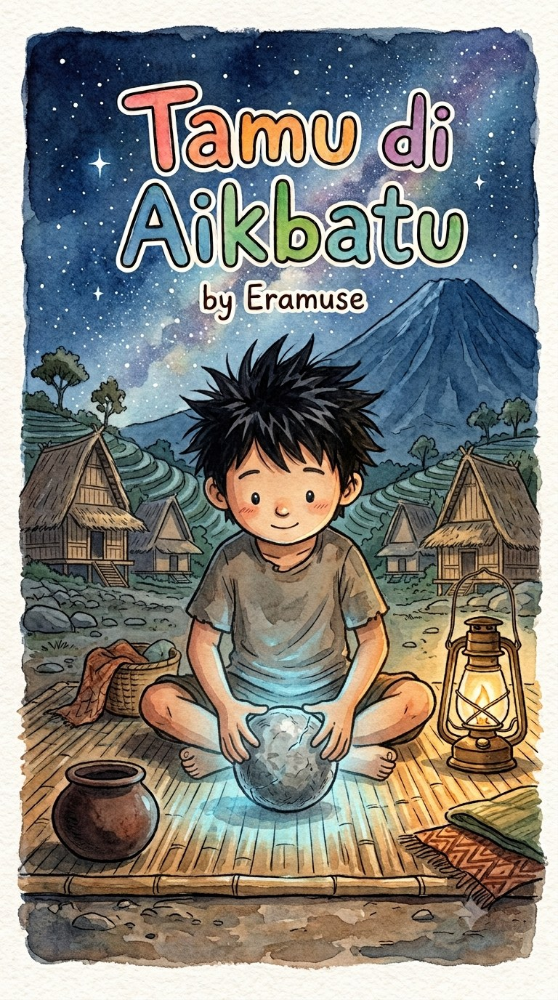
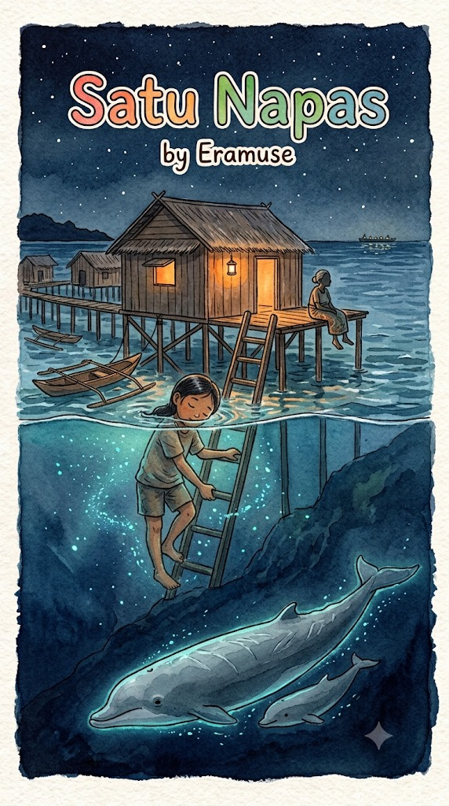

Aplikasi belajar gratis, offline, dan tanpa iklan untuk anak dan guru di Indonesia — dan buku fiksi ilmiah untuk anak.
Free, offline, ad-free learning apps for children and teachers in Indonesia — and science fiction books for children.
Belum ada jadwal — nantikan pengumuman berikutnya.No schedule yet — stay tuned for the next announcement.
🏆 Lomba AyoMath · sekolah & komunitas · Kelas 1–6
🏆 AyoMath Competition · schools & communities · Grades 1–6
Lomba dan latihan matematika online. Setiap peserta satu roket: makin banyak jawaban benar, makin tinggi terbangnya — peringkat sekolah dan upacara juara ditayangkan langsung. Semua diadakan melalui Skeddo.
Online maths competitions and practice. One rocket per participant: the more right answers, the higher it flies — school rankings and the winners' ceremony are shown live. Everything runs through Skeddo.
Belum ada yang berlomba saat ini — jendela ini memutar contoh tampilan.
Nobody is racing right now — this window plays a preview.

Fiksi ilmiah untuk anak · Dibacakan 8+ · baca sendiri 10+
Science fiction for children · Read aloud 8+ · alone 10+
Kami juga menerbitkan buku fiksi ilmiah untuk anak. Yang pertama: suatu malam di lereng Rinjani, sesuatu jatuh dari langit — dan Jabrik, 10 tahun, mengajarinya bicara. Cerita berlatar Lombok, dengan sains sungguhan di setiap bab.
We also publish science fiction books for children. The first: one night on the slopes of Mount Rinjani, something falls from the sky — and ten-year-old Jabrik teaches it to talk. Set in Lombok, with real science in every chapter. (In Indonesian.)
Edisi digital ini saat ini bisa dibaca tanpa biaya. Ketersediaan dan harga edisi lain dapat berbeda.
This digital edition is currently available at no cost. Availability and pricing of other editions may differ.

BARUFiksi ilmiah untuk anak · Dibacakan 8+ · baca sendiri 10+
NEWScience fiction for children · Read aloud 8+ · alone 10+
Di bawah lantai rumah Pari, ada laut. Setiap senja Pari, 11 tahun, mendengar bunyi dari laut dalam yang tidak didengar orang lain. Lalu kapal survei datang, dan laut mulai berdentum. Cerita berlatar Wakatobi, dengan ilmu laut sungguhan di setiap bab.
Under the floor of Pari's house, there is the sea. Every dusk, eleven-year-old Pari hears a sound from the deep that nobody else can hear. Then a survey ship comes, and the sea starts to boom. Set in Wakatobi, with real ocean science in every chapter. (In Indonesian.)
Tiga bab pertama bisa langsung dibaca. Buku lengkapnya untuk orang tua dan guru: gabung grup Eramuse House di Skeddo — saat ini tanpa biaya.
The first three chapters are open to read. The full book is for parents and teachers: join the Eramuse House group on Skeddo — currently at no cost.
Geser ke samping untuk buku lain · Swipe sideways for more books · Semua buku →All books →
Untuk anak · Kelas 1–6
For children · Grades 1–6
Game latihan matematika SD sesuai Kurikulum Merdeka — dari berhitung dasar sampai pecahan, geometri, dan soal cerita. Ada Mode Jenius bertaraf internasional (benchmark Singapura & Korea). Bekerja tanpa internet, tanpa iklan, tanpa data pribadi anak.
A primary-school maths practice game aligned with Indonesia's Kurikulum Merdeka — from basic arithmetic to fractions, geometry and word problems. Includes an international-standard Genius Mode (benchmarked against Singapore & Korea). Works without internet, without ads, and without any personal data from children.
Untuk guru · IPAS SD Kelas 1–6
For teachers · Primary science (IPAS) · Grades 1–6
Teman mengajar IPAS untuk guru SD — 43 pelajaran selaras CP IPAS 2025 (Fase B–C, plus pengenalan Fase A) dengan naskah lisan yang hangat, 105 eksperimen berbahan rumahan, rubrik penilaian, dan Modul Ajar siap ekspor. Bisa dibawakan tanpa proyektor dan tanpa internet — dan guru tidak pernah dipantau.
A science-teaching companion for primary-school teachers — 43 lessons mapped to the 2025 IPAS curriculum (Phases B–C, plus a Phase A introduction) with warm spoken scripts, 105 experiments using household materials, assessment rubrics, and ready-to-export lesson plans (Modul Ajar). Can be taught without a projector and without internet — and teachers are never monitored.